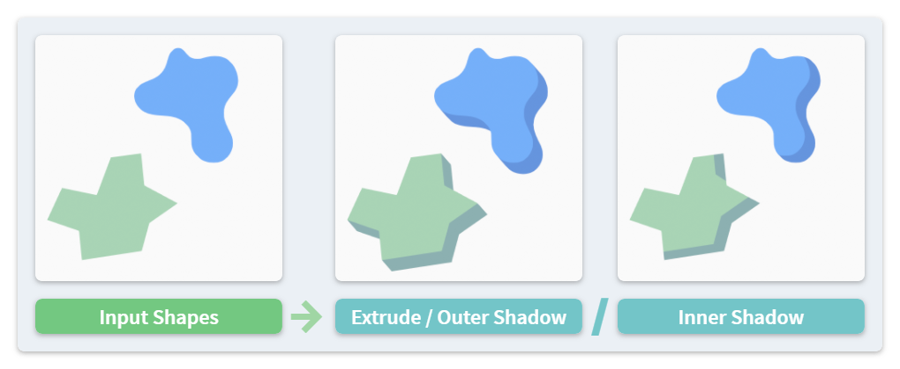

Sweep #
The Sweep operation drags stroke polygons along a given vector or path to create several effects, such as the pseudo-3D extrusion and shadowing.

The mathematical terminology behind this concept is Minkowski sum.
From Sidebar Panel #
The Sweep button in the sidebar panel performs the operation on each selected stroke by typing the lengths of a 2D vector.
Shape Style #
The following 3 styles apply:
- Extrude: It turns the shapes into a pseudo-3D look.
- Outer Shadow: It is similar to the Extrude style but the output only contains the newly generated paths.
- Inner Shadow: It generates a rim inside the input stroke shape.
If you need to turn strokes into real 3D objects instead of pseudo-3D ones, you may consider Mesh Generation operators instead.
Curved Path #
Path Type option, the last selected stroke can be used as the path. The path itself will not be processed. Therefore, please select at least two strokes in this mode.
Process Holdout #
Since material holdout is used to represent holes in a shape, it would look incorrect when sweeping it together with other shapes. Therefore, the following special rules can be applied:
- For Extrude and Outer Shadow style, execute Inner Shadow for holes instead. If the holdout material is generated by this add-on's Hole Holdout operation, the material will be changed back to the non-holdout one.
- For Inner Shadow style, the holes are excluded from the input and ignored.
Color Tint #
A new vertex color can be assigned to the output strokes. With a tint color and the Keep Original option on, repeating the operator for multiple times can create a gradient coloring effect.
From Toolbar #
Sweep operations can also be performed from the toolbar as a tool named 2D Sweep. Instead of typing numbers, the path vector is controlled by mouse dragging.
The style can be switched by holding different keys:
- Default: Extrude
- Ctrl: Outer Shadow
- Shift: Inner Shadow